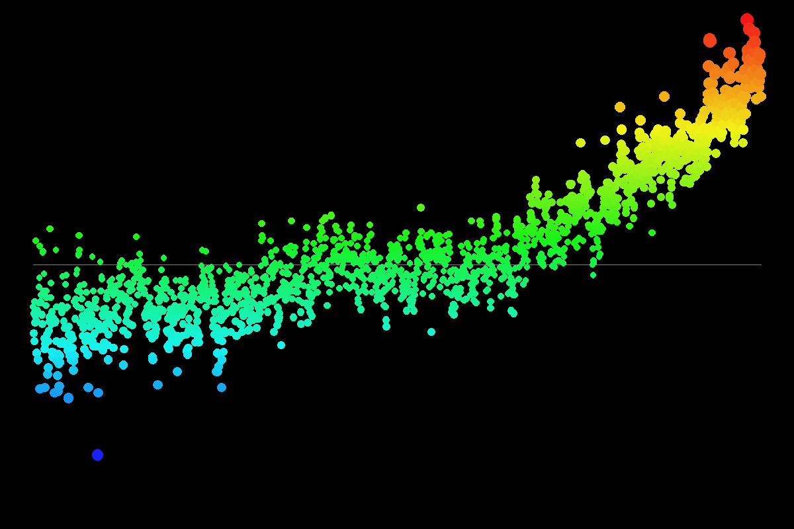

This image visualizes global temperature anomalies from 1880 to the present. The timeline progresses from left to right. The color and vertical position of each dot represent the temperature anomaly for that time period (red/high for warmer, blue/low for colder).

An interactive visualization of weekly US AQI and Temperature (°F) data for New York.
The data has been collected using a GitHub Action from my AirAlert_Notification project.